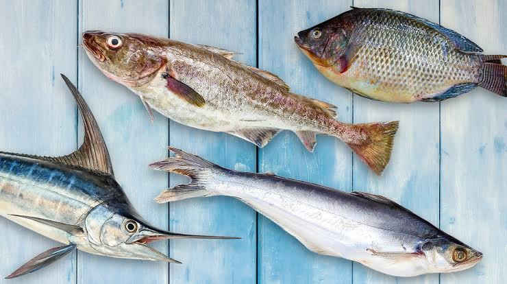
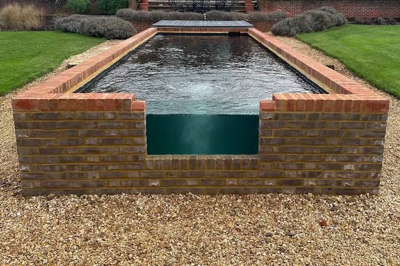
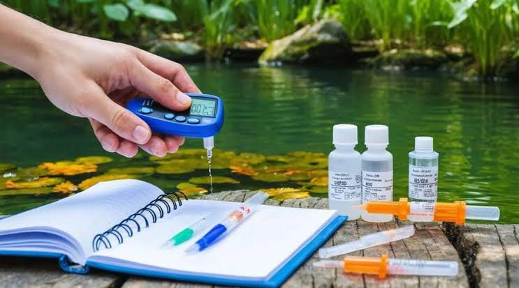
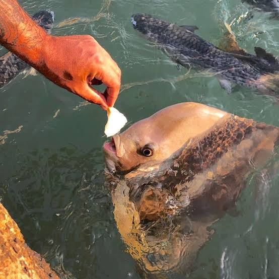
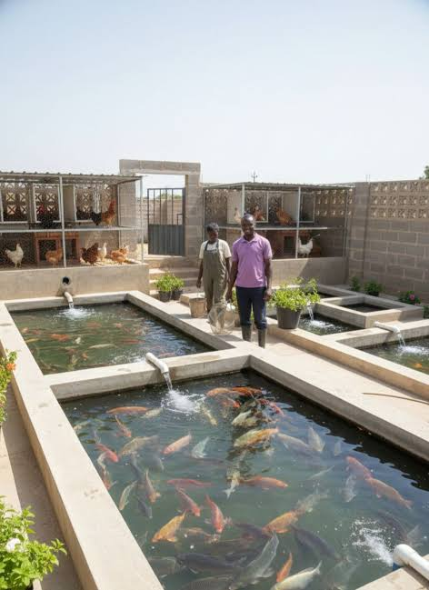
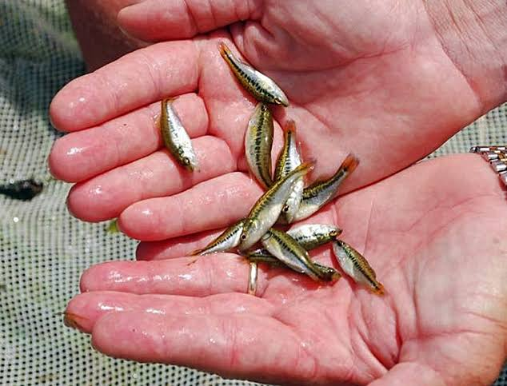
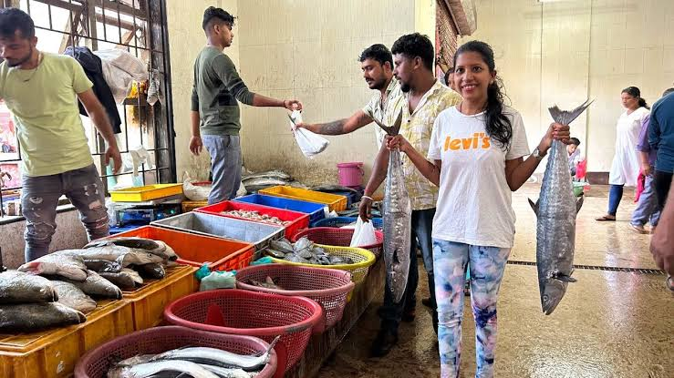

.jpg)
Fish farming is a growing industry that produces nutritious protein, creates employment, and offers high returns on investment with proper management.
Fish farming, or aquaculture, is the practice of raising fish in controlled environments such as ponds, tanks, or enclosures. Unlike wild fishing, aquaculture allows farmers to control the entire production process, from breeding through harvesting. This enables consistent, predictable yields and better management of disease and feed quality.
Fish farming turns water into protein, providing food security and income to farming communities.
Fish are excellent converters of feed to protein, requiring much less feed than land animals to produce the same amount of protein. Fish also grow quickly, with most species reaching market size within 6-12 months. This makes fish farming an economically attractive enterprise for farmers seeking quick returns. Common farmed fish include tilapia, catfish, carp, and trout, each with different requirements and market values.
Different fish species have different requirements, growth rates, and market values. Tilapia is hardy, grows well in warm water, and tolerates poor water conditions. African catfish grows rapidly and feeds at the bottom, making it suitable for integrated farming. Common carp is domesticated, highly adaptable, and suitable for polyculture. Trout requires cool, clean water with high oxygen levels.

Selecting the right fish species for your climate and market ensures higher survival, growth, and profitability.
When selecting fish, farmers must consider local climate, water availability, feed sources, market demand, and personal management capacity. Stocking the pond with fingerlings (young fish) of similar size ensures uniform growth and reduces cannibalism. Using healthy, disease-free fingerlings from reliable hatcheries improves survival rates.
A fish pond must be properly designed and constructed to ensure efficient water management, disease control, and harvesting. Key features include water inlet for filling and water exchange, outlet for draining, pond slope, and embankments that prevent seepage and collapse. Pond size varies from small backyard ponds of 10 square meters to large commercial ponds of 1000 square meters or more.

A well-constructed pond is the foundation of successful fish farming, preventing costly failures and disease outbreaks.
Site selection is critical; the pond must have reliable water supply, adequate drainage, protection from flooding, and accessibility for management. Soil must be suitable for holding water, with good clay content to prevent excessive seepage. In sandy areas, pond liners may be necessary. Depth is typically 1.0-1.5 meters to maintain temperature, reduce light penetration, and prevent weed growth on the bottom.
Fish live in water, so water quality directly affects their growth, health, and survival. Important water quality parameters include temperature, dissolved oxygen, pH, ammonia, and nitrite levels. Most fish species prefer temperatures between 25-30°C, though requirements vary by species. Dissolved oxygen is essential; fish cannot grow well if oxygen levels are too low.

Poor water quality limits growth and causes disease; good management of water is the key to successful harvests.
Regular water exchange helps remove waste products and maintain oxygen levels. Aeration using paddlewheels or air pumps increases dissolved oxygen and improves water circulation. Lime (calcium oxide) can be added to adjust pH and reduce disease-causing organisms. Algae helps produce oxygen during the day, though excessive algae reduces water clarity and night-time oxygen levels.
Fish require balanced diets containing protein, carbohydrates, lipids, vitamins, and minerals. Feed is the largest cost in fish farming, accounting for 50-70% of production expenses. Quality feed promotes faster growth, better feed conversion, and reduced waste, improving profitability. Overfeeding wastes feed and pollutes water, while underfeeding slows growth.

Good feeding schedules and quality feed convert quickly into fish meat and profit for the farmer.
Fish are typically fed once or twice daily, with feeding amount based on fish weight and water temperature. Slower growth occurs in cool water, so feeding rates are adjusted by season. Commercial pellet feeds are convenient but expensive; farmers may also use locally available feeds such as maize bran, groundnut cake, and fishmeal. Feed quality must be checked for contamination and spoilage before use.
Common fish diseases include bacterial infections, fungal infections, parasitic infestations, and viral diseases. Poor water quality, overcrowding, and stress increase disease incidence. Signs of disease include abnormal behavior such as jumping or irregular swimming, loss of appetite, skin sores, gill damage, and unusual coloration.

Prevention through good management is simpler and cheaper than treating disease outbreaks in the pond.
Disease prevention includes maintaining good water quality, avoiding overcrowding, quarantining new fish before introducing them to the main pond, removing dead fish immediately, and keeping the farm clean. If disease occurs, affected fish can be treated with salt baths, medicated feed, or other approved treatments. Early detection and isolation prevent disease spread to healthy fish.
Fish farming can include on-farm breeding to produce fingerlings instead of purchasing them. This reduces costs and provides control over fish quality. Most fish species breed naturally when water conditions are suitable. Some species, like tilapia, breed readily and can overpopulate the pond, reducing individual growth.

Controlling breeding ensures balanced fish populations and uniform growth within the production system.
Hatchery management involves maintaining separate breeding ponds, controlling water temperature and quality to trigger spawning, and caring for eggs and newly hatched fry. Fry must be protected from predation and fed specialized starter feeds until they grow large enough to consume regular feeds. Proper fry management significantly improves overall farm productivity.
Fish are harvested when they reach market size, typically 300-500 grams depending on species and market demand. Harvesting methods include draining the pond and using nets, or seining (sweeping nets through water to capture fish). Gentle handling during harvesting reduces stress and injury, improving post-harvest quality.

Proper harvesting and handling preserve product quality and maximize market value.
After harvesting, fish must be quickly cooled and kept fresh until sale. Methods include ice storage, smoking, drying, or selling live to local markets. Quality fish fetch better prices, so handling care pays off economically. Marketing channels include direct sales to consumers, hotels, restaurants, or wholesale markets. Building relationships with buyers ensures consistent sales.